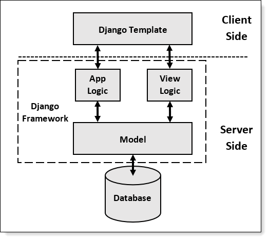

Xây dựng website với Django
Tổng quan Django
Django là một framework cho phép xây dựng website có backend nhanh chóng. Cấu phần của Django được sử dụng để giải quyết 3 phần:
Phần 1: Làm việc với database và data
Phần 2: Làm việc với các template (html template, css)
Phần 3: Làm việc xử lý truyền tải thông tin giữa end-user và database
Các cấu phần trên được mô tả qua sơ đồ sau:
Cấu trúc cơ bản project của Django:
django-project/
env_mysite/
mangage.py
db.sqlite3
my-site/
__init__.py
settings.py
urls.py
asgi.py
wsgi.py
app1/
app2/
Các files trong project:
env_mysite: Virtual environment của project. Các package được sử dụng chodjangosẽ được cài đặt ở đây, tách biệt với cả môi trường độc lập trongglobal environment, giúp dễ dàng cho việc deploy và quản lý.manage.py: Các command-line cho phép làm việc với projectdb.sqlite3: Database của websitemy-sitefolder: Python package cho website__init__.py: Cấu trúc file cho phép sử dụng folder như là 1 packagesettings.py: Các settings trong project, bao gồm cả các app đã được cài sẵn trong module củadjangourls.py:asgi.py:
app1,app2: Các package riêng, phục vụ 1 chức năng nhất định do người dùng tạo thêm. Trong filesettings.pycủamy-sitecũng đã có nhiều app được cài sẵn. Ví dụ
my-site\settings.py
INSTALLED_APPS = [
'django.contrib.admin',
'django.contrib.auth',
'django.contrib.contenttypes',
'django.contrib.sessions',
'django.contrib.messages',
'django.contrib.staticfiles',
]
Cấu trúc trong app: Ví dụ trong app polls
polls/
__init__.py
admin.py
apps.py
migrations/
__init__.py
models.py
tests.py
views.py
Model
Model là các đối tượng được khai báo trong Django, quyết định cấu trúc của database. Model chính là các đối tượng cần được khai báo để thay đổi, hiển thị từ tầng người dùng.
Ví dụ model trong app được khai báo như sau:
class Question(models.Model):
question_text = models.CharField(max_length = 200)
pub_date = models.DateTimeField('date published')
class Choice(models.Model):
question = models.ForeignKey(Question, on_delete = models.CASCADE)
choice_text = models.CharField(max_length = 200)
votes = models.IntegerField(default = 0)
Models sau khi được khai báo, cần phải được cài đặt trong settings của project. Ví dụ với app polls, cần cài đặt thêm như sau:
INSTALLED_APPS = [
'polls.apps.PollsConfig',
...
]
Sau khi khai báo models xong, cần phải migrate sang database như sau:
python manage.py makemigrations polls
Sau khi migrate xong sẽ có kết quả như sau
Migrations for 'polls':
polls/migrations/0001_initial.py
- Create model Question
- Create model Choice
Sau khi migrate xong, trong thư mục migrations trong app sẽ xuất hiện file mới là 0001_initial.py
Lưu ý: makemigrations là câu lệnh thông báo rằng model có sự thay đổi. Câu lệnh này sẽ thay đổi cấu trúc của database mà thôi (không thay đổi content)
Kiểm tra cấu trúc dữ liệu mà database tạo ra:
python manage.py sqlmigrate polls 0001
Các câu lệnh cơ bản
Start project:
django-admin startproject name-of-projectRun server:
pyhon manage.py runserverCreate app:
python manage.py startapp name-of-appMigrate db - tạo cấu trúc db:
python manage.py makemigrations pollsCreate db:
python manage.py migrateTạo admin user:
winpty python manage.py createsuperuser
Câu lệnh migrate cho phép python kiểm tra hết cấu phần settings.py, và tạo database
Tài liệu tham khảo: